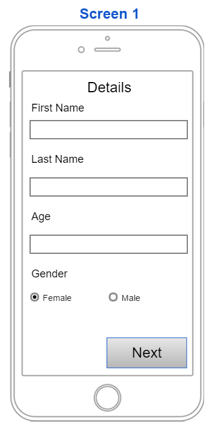

Menu ☰
Home
Industry Project
This project was initiated from a request by the client to gather information on a regular basis from elderly people.
Elderly people interact with Technology and other factors that may affect the way they feel.

The first image was the first mockup for the client but after recieving feedback he only wanted to first page to show up the first time they open the app to add in their details. We went back to the drawing board and created the second image, during our weekly meetings it was discussed that this was all too cramped escpecially seeing as it was being used by the elderly. Finally the third image was created which the team decided was a great final design.

The client wanted the users to select their mood and then have them go into more depth about the mood they selected. During our meeting we mocked up a few designs and the first image was the one that everyone was happy with. After discussions we decided to change it as there was too much information apearing on the screen. So we decided to make it simple, have one option per page so it was easy to understand and users were not bombarded with information.
The first two images were created at the same time as the first two images above and as mentioned we thought there was too much going on so we did the same as the previous screens, we left it with the user just picking the reason why they were in the mood they said they were in. We also decided to leave what they had picked up in the top just incase users had trouble remembering or left to go do something and came back half way through. The final design reasons (as seen in the second images) with icons to make it simple and easy to understand, but then branched off into sub sections so our client could get more into the reason they were in this mood. The client did not ask for this but we put it forward to him and he was more than happy for us to implement this into the application.
This final screen was a last minute implementation our client wanted to see if we could include, with all other screen designs done we knew what we needed and how it should look. The first design that was created the team decided it needed more images as the rest of the application was relying a lot on visuals. The second design is what the team and client were happy with.
The above images are the final screen of the application showing exactly what the user has entered and letting them know how many times they have completed this little survey our client wanted.
These are a few icons I created for the project which were used on the third screen of the application
As a bit of fun we were asked to create our own company for this project adding more "realism" after many votes our team decided on Cactus Inc. During my down time in this project I created this logo for the team and it was used on all of our presentations as a sort of copyright symbol.